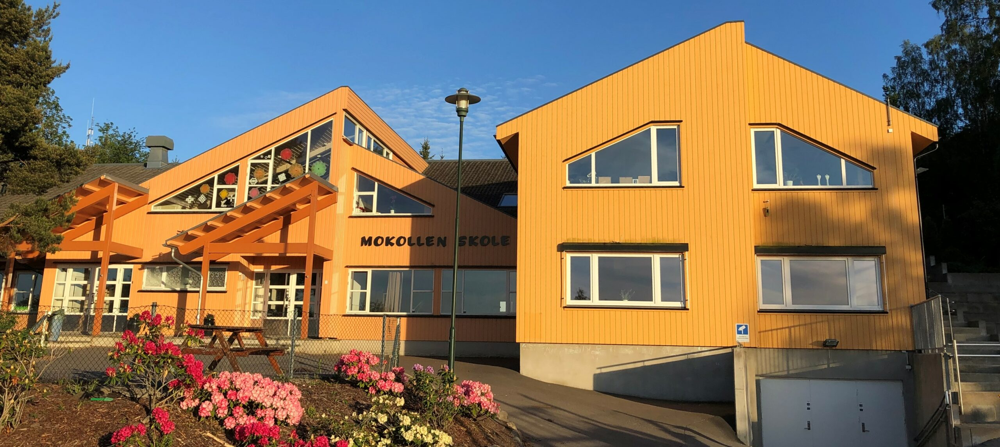

Skolemiljø
Skolemiljøet vårt skal fremme helse, trivsel og læring for alle elever. Vi jobber aktivt og systematisk for et trygt og godt miljø, hver eneste dag.
Ordensreglement
Ordensreglementet fastsetter regler for elevenes atferd, rettigheter og plikter på skolens område, på skoleaktiviteter og på vei til og fra skolen.
Elevene har rett til
- Et trygt fysisk og psykososialt skolemiljø
- Å slippe trakassering, mobbing og diskriminering
- Respektfull behandling fra medelever og ansatte
Elevene har plikt til å
- Vise respekt og hensyn overfor andre
- Møte presist og følge med i undervisningen
- Ta vare på skolens eiendom og materiell
- Avstå fra mobbing, slåssing eller å forstyrre andres skolegang
Handlingsplan mot mobbing
Mokollen skole jobber aktivt og systematisk for et godt og trygt skolemiljø for alle elever. Dokumentene beskriver skolens forpliktelse til å skape et inkluderende fellesskap der hver elev kan trives faglig og sosialt.
Trivselsprogrammet

Trivselsleder er Skandinavias største program for aktivitet og inkludering i grunnskolen. Utvalgte elever fra 4.–10. trinn er "mobbefrie trivselsledere" som organiserer aktiviteter i friminuttene for å skape fellesskap og et tryggere skolemiljø. Målene er å øke trivsel, gi flere varierte aktiviteter, bygge vennskap, forebygge konflikt og mobbing, og fremme inkluderende og respektfulle elever. I tillegg arrangerer vi lekedager for hele skolen.
SMART oppvekst
SMART oppvekst er en tankegang brukt av skoler og kommuner over hele Norge, med støtte fra myndighetene. Ikke et fastsatt program, men en grunnleggende måte å tenke på.
Styrkefokus
Medvirkning
Anerkjennelse
Relasjon
Trening
Hos oss jobber lærere og elever bevisst med å oppdage styrker hos seg selv og andre, blant annet gjennom virkelige skolesituasjoner og fortellinger. Vi oppfordrer familier til å bruke SMART-prinsippene hjemme også — les mer på smartoppvekst.no.
Skolerute og skoledagen
Skolen åpner kl. 08:15 for 8.–10. trinn. Elever i 1.–4. trinn som kommer før kl. 08:10 går inn i morgen-SFO, som starter kl. 08:00.
Gratis leksehjelp, fra og med uke 35:
1.–3. trinn
Tirsdager 13:10–13:55
4.–7. trinn
Onsdager 13:10–13:55
8.–10. trinn
Tirsdager 13:55–14:40
8.–10. trinn
Onsdager 13:10–13:55
Full skolerute for kommende skoleår publiseres her og sendes ut til foresatte ved skolestart.
Nyttig info om skolemiljø
Foresatte som ønsker å lese mer om regelverket rundt skolemiljø kan se Utdanningsdirektoratets (UDIR) rundskriv om skolemiljø (Udir-3-2017).